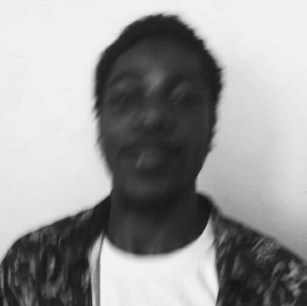

About Me
I’m a Self-Taught Fullstack Web Developer equipped with latest techniques of Developing and Designing responsive website both for mobile and laptop devices.
I graduated from the University of Abuja and I have a bachelor’s degree in Agricultural Economics and Extension.